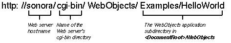

Table of Contents
Table of Contents
 Previous Section
Previous Section
Table of Contents
Previous Section
Typical Web Objects applications contain the following ingredients:
All the WebObjects resources are located in three primary locations:
You write the components of a WebObjects application. Typically, you put the components of a WebObjects application in a directory with the same name as the application, and the application directory goes somewhere in the <DocumentRoot>/WebObjects directory.
To run a Web Objects application, you open a URL with the following form: 